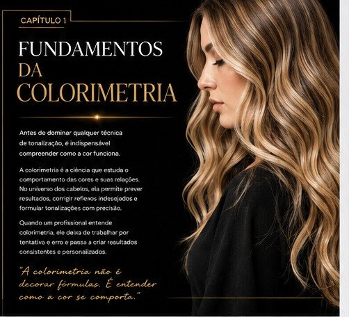
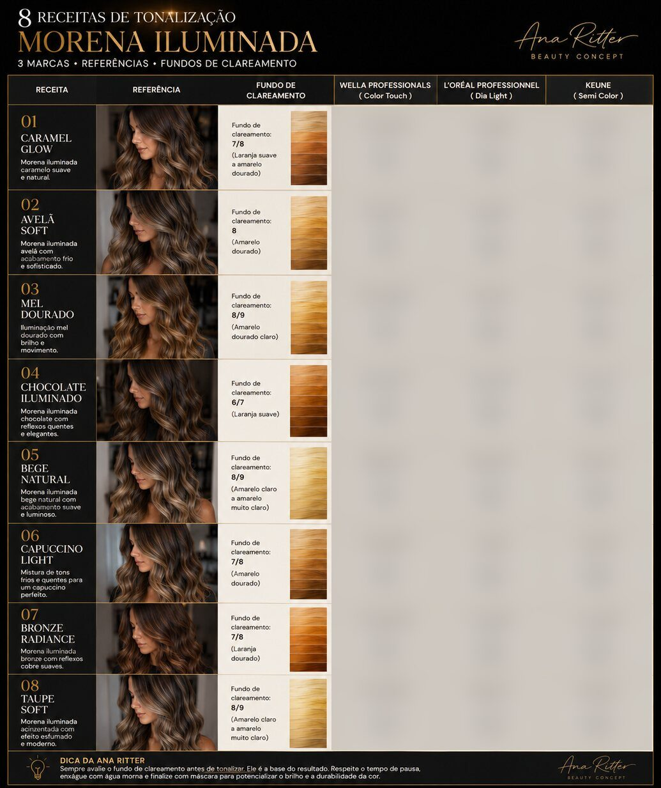
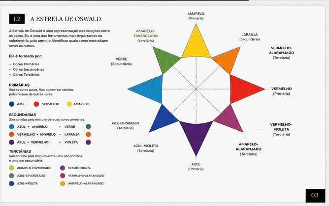

Pare de descobrir o tom depois que já aplicou.
O guia de colorimetria para lavatório da Ana Ritter: você aprende a ler o fundo de clareamento do fio e sai com 8 receitas prontas, já convertidas para Wella, L'Oréal e Keune.
Garantir meu ebook por R$ 9,99Você mistura com cuidado e o resultado ainda sai diferente do combinado.

Primeiro você lê o fio. Só depois encosta na tinta.
O método parte da leitura: identificar o fundo de clareamento que o cabelo revelou e só então escolher o reflexo que neutraliza. É por isso que o resultado deixa de ser sorte. Você já sabe o que vai sair antes de misturar.
"A colorimetria não é decorar fórmulas. É entender como a cor se comporta."
Ana Ritter, no capítulo 1
de tonalização morena iluminada, prontas pra copiar
cada receita já convertida em Wella, L'Oréal e Keune
pagamento único, sem mensalidade
Páginas do próprio ebook. Veja com o que você vai trabalhar.
A tabela de receitas é a que você abre na cadeira, no meio do atendimento. Cobrimos as fórmulas aqui por um motivo simples: elas são o produto.

As 8 fórmulas,
já convertidas
nas 3 marcas,
estão no ebook.

O que você leva
Dica da Ana Ritter
Nunca escolha o tonalizante apenas pelo número da caixa. Primeiro identifique o fundo de clareamento e só depois escolha o reflexo neutralizante.
Está aprendendo cabelo e quer segurança antes de tonalizar cliente de verdade
Já entregou um resultado diferente do que tinha combinado no espelho
Quer entender o porquê da fórmula, não decorar mais uma receita
Busca curso completo de colorimetria com certificado
Quer atalho sem aplicar o conteúdo na prática
Tudo o que você precisa pra tonalizar com previsibilidade, hoje.
- O ebook completo em PDF, acesso imediato
- A tabela das 8 receitas convertida em 3 marcas
- As tabelas de neutralização e altura de tom
- Garantia de 7 dias, sem letra pequena
Pagamento único · sem mensalidade
Quero garantir meu ebook agoraGarantia de 7 dias — não gostou, seu dinheiro de volta